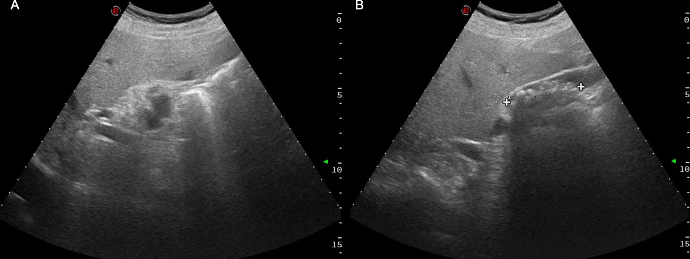
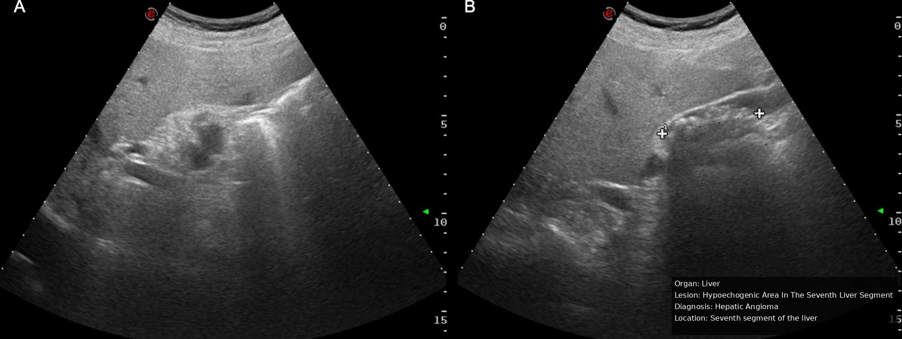
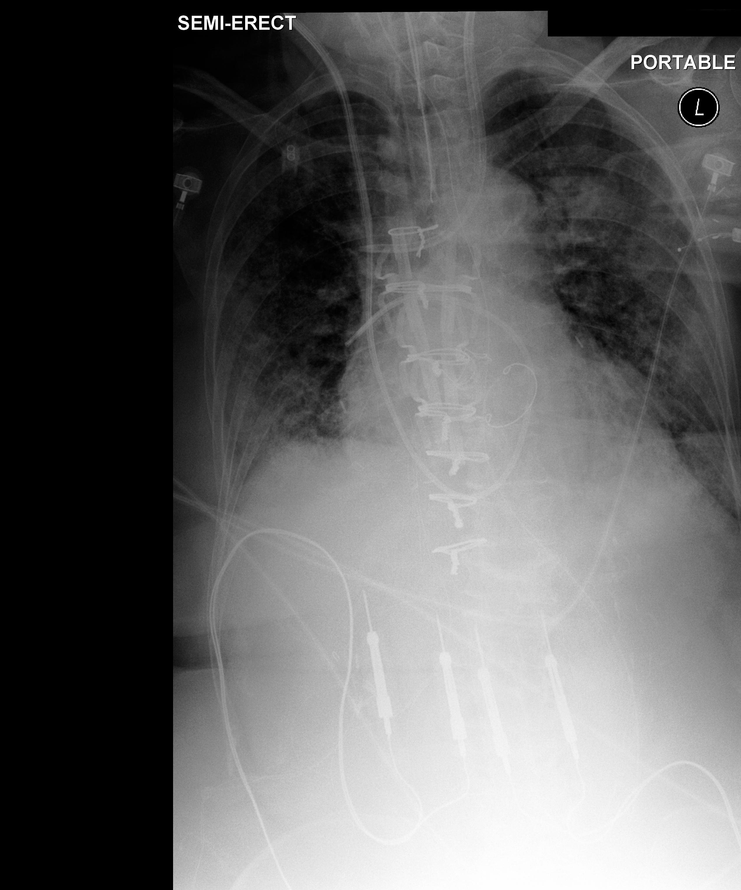
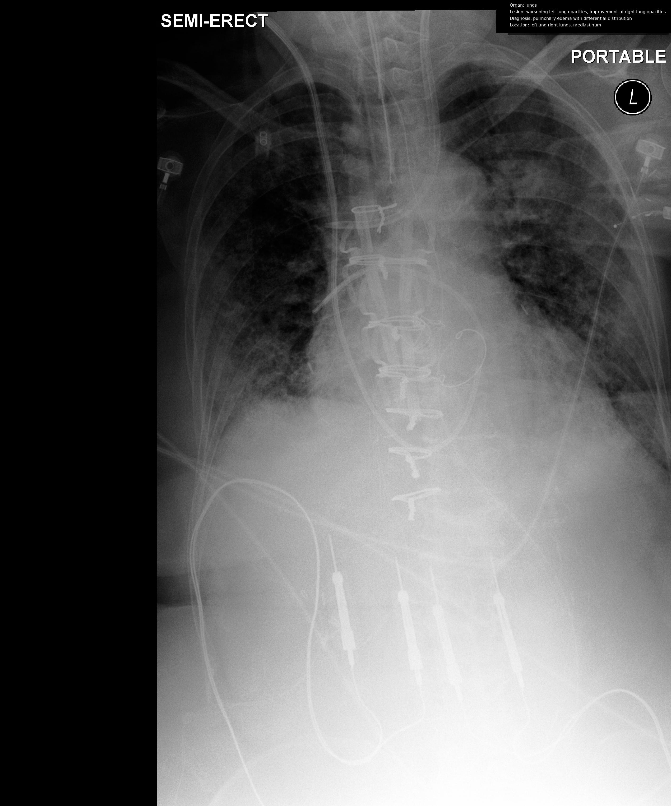
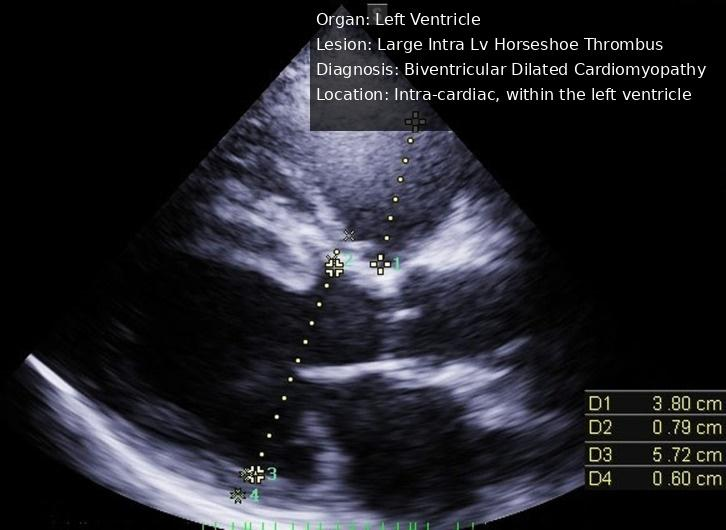
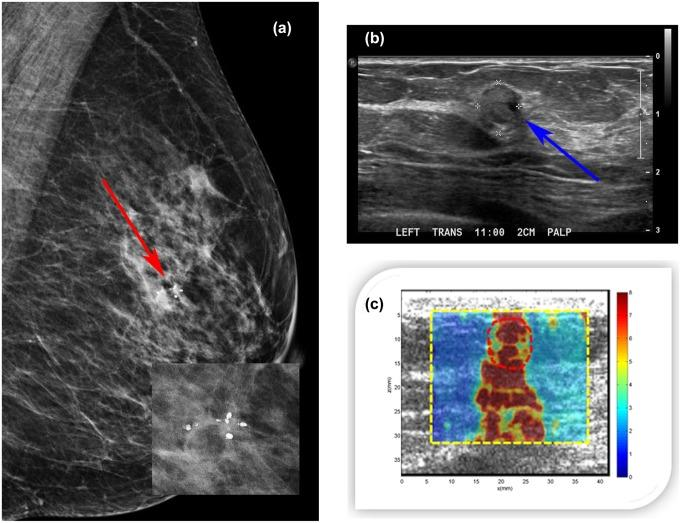
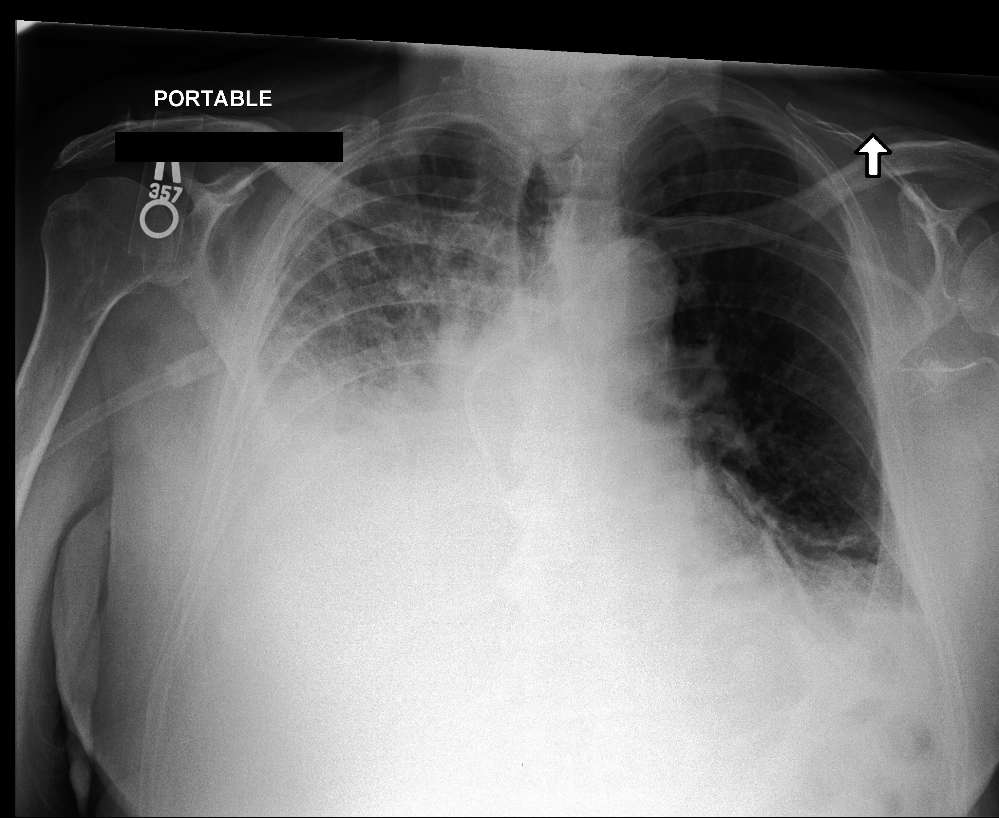
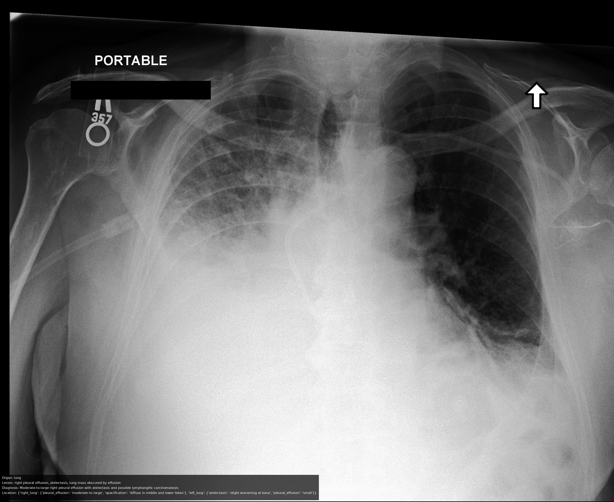

MedGEN-Bench Contextually Entangled Benchmark for Open-Ended Multimodal Medical Generation
Overview

Abstract
Medical vision-language models (VLMs) are increasingly expected to support clinical workflows through the generation of diagnostic text and relevant medical images. However, existing medical visual benchmarks exhibit three recurring limitations: query–image misalignment arising from queries that are weakly grounded in specific image instances, closed-ended formats that narrow the answer space and encourage shortcut-based prediction, and text-centric output paradigms that limit the evaluation of image-generation and image-editing capabilities. To address these limitations, we introduce MEDGEN-BENCH, a benchmark for open-ended multimodal medical generation. The evaluation snapshot reported in this manuscript comprises 6,422 expert-reviewed image–text pairs spanning 6 canonical imaging modalities, 15 clinical tasks, and 26 named subtasks. It includes 1,100 Visual Question Answering (VQA) pairs, 3,872 Image Editing pairs, and 1,450 Contextual Multimodal Generation pairs. MEDGEN-BENCH centers on contextual entanglement, defined as the dependence of an instruction’s intended output on the particular image instance rather than on task wording alone. The benchmark operationalizes this concept through image-grounded instructions and extends evaluation to open-ended multimodal outputs. Its tiered evaluation protocol combines reproducible, reference-based fidelity and similarity measures with a structured, checklist-guided assessment by a medical VLM judge. Neither global similarity scores nor VLM-based judgments are treated as evidence of clinical correctness. We evaluate 10 compositional frameworks, 2 dedicated image-editing models, 3 unified models, and 5 VLMs. The results show that image-output tasks remain unsaturated, with contextual multimodal generation appearing more challenging than image editing under the reported metrics. Contextual augmentation increases the mean image–instruction similarity from 0.273 to 0.372, while a 1,000-case medical-expert audit shows moderate agreement between the judge scores and clinician ratings. The source code and manifest for the reported evaluation snapshot will be made publicly available on GitHub.
Representative Image-Editing Pairs
Each row shows a benchmark input and its reference target from the released dataset. Hover over an image, or focus it with the keyboard, to view its description.
The seven-page gallery rotates automatically. Use the previous and next buttons, page selectors, or left and right arrow keys to browse.
















Evaluation Protocol and Main Findings
The protocol combines modality-specific metrics with VLM-based holistic evaluation.
| Level | Metric or evaluator | Applied to | Procedure |
|---|---|---|---|
| Image-level | SSIM · PSNR · LPIPS | Image generation and editing | Structural, pixel-wise, and perceptual comparison with the reference image. |
| Text-level | PubMedBERT BERTScore | Text generation and VQA | Contextual-embedding similarity between generated and reference text. |
| Holistic | VLM-as-a-Judge; Analyze-then-Judge; 1–10 scale | All three formats | With GT: output against reference. Without GT: input and output only. Dimensions: coherence, visual–text alignment, content accuracy, relevance, and consistency. |
For VQA and image editing, holistic evaluation uses content accuracy, relevance, and consistency. Cross-metric results are thresholded and reported as accuracy rates; full thresholds are given in the paper appendix.
| Model | System | Holistic w. GT |
Holistic w.o. GT |
SSIM | PSNR | LPIPS | BERTScore |
|---|---|---|---|---|---|---|---|
| Gemini-2.5-flash-image | Unified | 23.58 | 49.78 | 95.21 | 93.68 | 99.56 | 46.86 |
| Ming-UniVision | Unified | 8.54 | 11.48 | 96.19 | 81.41 | 96.55 | 24.93 |
| Qwen3-VL + Seedream-4.0 | Compositional | 30.79 | 68.81 | 74.11 | 68.00 | 48.59 | 50.98 |

Main observations
- Evaluation coverage: 10 compositional frameworks, 2 image-editing models, 3 unified models, and 5 VLMs.
- For multimodal generation, Qwen3-VL + Seedream-4.0 obtains a with-GT holistic score of 30.79, compared with 23.58 for Gemini-2.5-flash-image, the strongest evaluated unified model in this column.
- Ming-UniVision records PSNR 81.41 and LPIPS 96.55, but a with-GT holistic score of 8.54; high image-level scores do not necessarily correspond to high cross-modal consistency.
- In the 1,000-pair ablation, contextual augmentation increases mean instruction–image similarity from 0.273 to 0.372 (+36.3%); the reported average pass rate is 86.9%.
The 36.3% figure is the relative change in instruction–image similarity and should not be interpreted as diagnostic accuracy.
BibTeX
@article{yang2025medgenbench,
title = {MedGEN-Bench: Contextually entangled benchmark for open-ended multimodal medical generation},
author = {Yang, Junjie and Yan, Yuhao and Wu, Gang and Wang, Yuxuan and Liang, Ruoyu and Jiang, Xinjie and Wan, Xiang and Fan, Fenglei and Zhang, Yongquan and Qin, Feiwei and Wang, Changmiao},
journal = {arXiv preprint arXiv:2511.13135},
eprint = {2511.13135},
archivePrefix = {arXiv},
primaryClass = {cs.CV},
year = {2025}
}